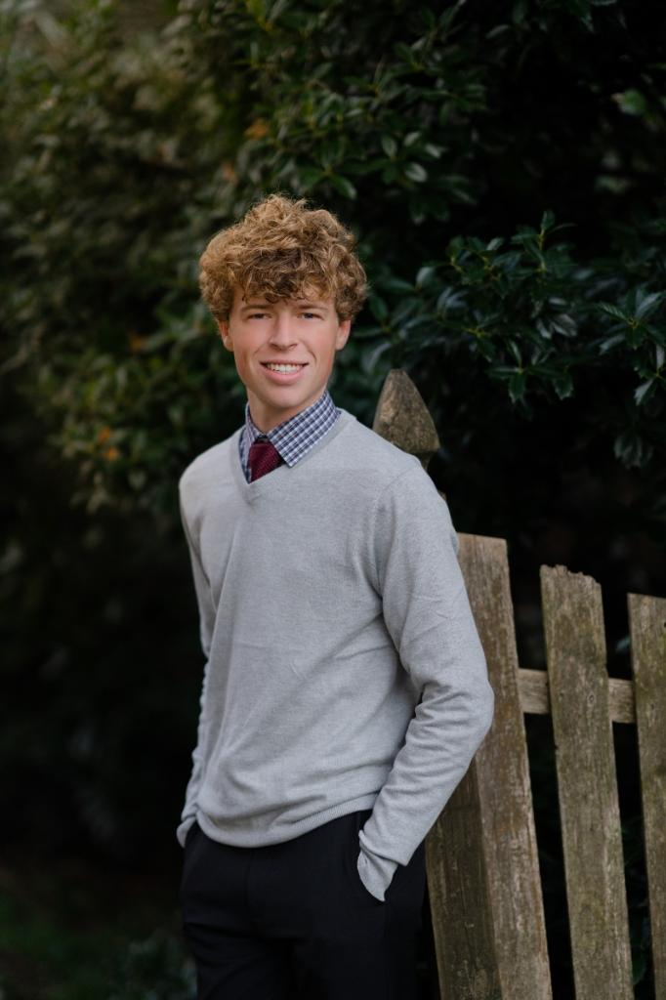
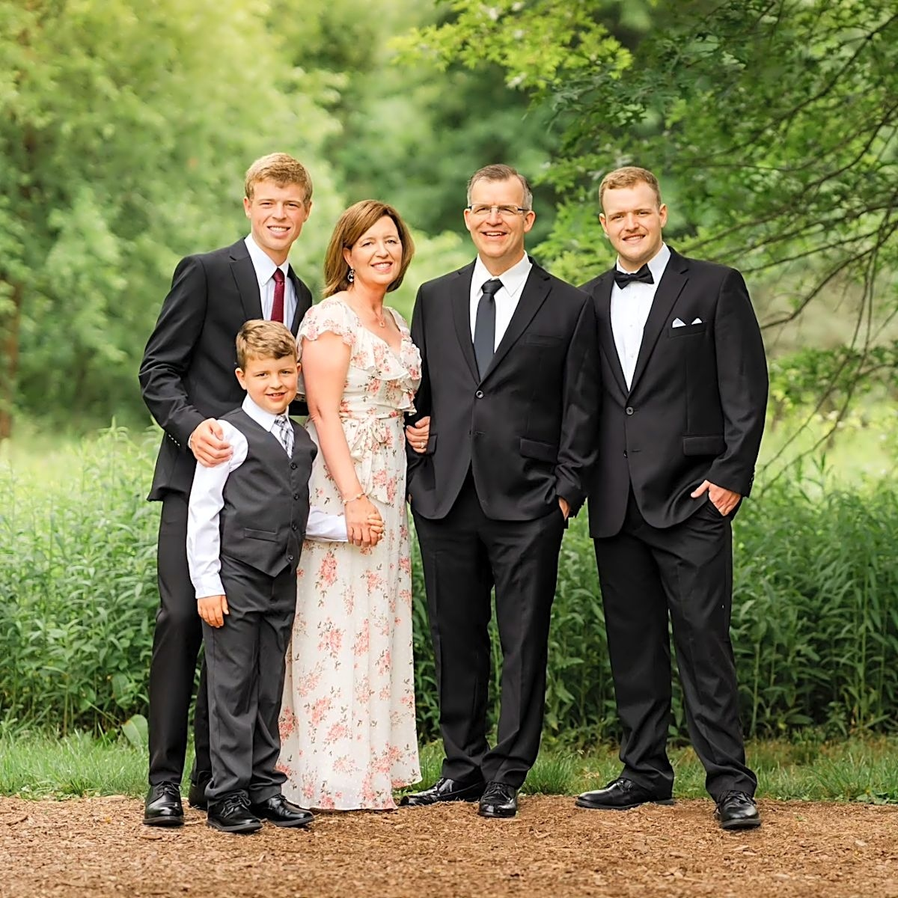

About Me

Hello, I'm Thomas Mazur, an Electrical Engineering student at the University of Pittsburgh. I created this portfolio to offer a deeper look into who I am and to showcase the projects and hands-on work I've completed in the field of electrical engineering. I hope you enjoy exploring my work and seeing my passion for innovation and problem-solving come to life.

I grew up in Ambler, Pennsylvania, and went to Wissahickon High School. Being the middle kid in my family, I've always been shaped by my parents — my dad, who's a mechanical engineer, and my mom, who's a nurse. Their careers really got me interested in problem-solving and science, which is why I decided to go into electrical engineering. Growing up, they taught me the value of working hard and looking out for others, and those are things I try to bring into everything I do, whether it's school or just life in general.
Ultimate Frisbee


The Pitt Ultimate Frisbee Team is nationally ranked, and we constantly travel across the country to compete in nationally qualifying tournaments.